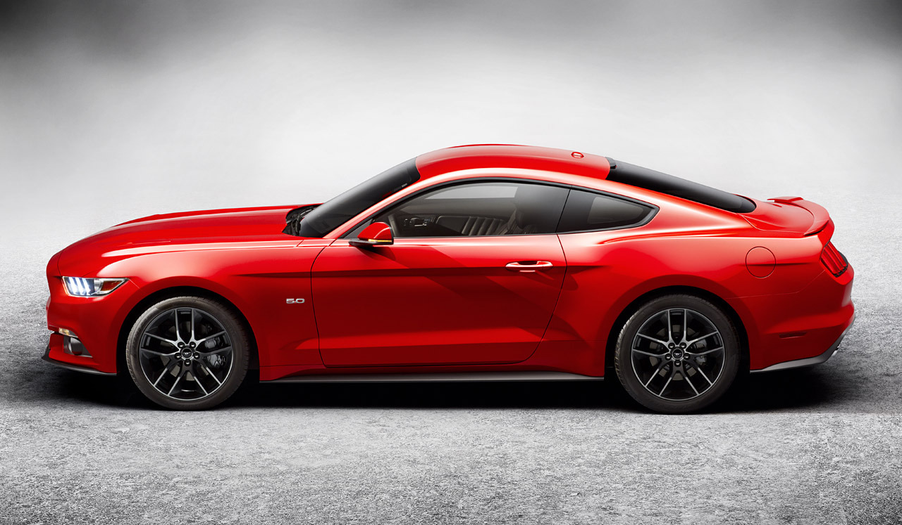

Прежде всего, обрати внимание на ХЭД этой страницы - он пустой и вообще поумолчанию, указана только ЮТФ-8 и всё) Но этого должно хватать!
Урок 6 - ссылки
Вроде тут просто текст, а нифига, тут ссылка-якорь стоит, именно сюда меня и переведёт ссылка #top, которую найду ниже по тексту.
Посетите поисковую систему Гугл она вроде ничего так работает!
Помни про относительную и абсолютную адресацию: проще говоря - полный путь к файлу и пусть к файлу начиная с папки в которой находится исходник (дальше всё как обычно - используй / и ..)
А теперь посетите поисковую систему Google ссылка на которую откроет гугл в новой вкладке, поскольку есть атрибут target="_blank".
Теперь делаю ссылку-якорь, для перехода по разделам на сайте. Например ссылка #top переведёт меня в то место документа где я укажу ссылку с именем #top(тут - ввеху страницы, что б проверить сделай минимальную ширину окна браузера)
Сделаю ссылку с подсказкой, наведи на неё мышь - появится подсказка, это атрибут title в самой ссылке. Ещё ж и на новую вкладку!
Урок 7 - Списки
Нумерованные списки
Простейший нумерованный список - тег ol-li-ol:
- Кошка
- Собака
- Неведомая хрень какая-то
После закрытия списка - всё с новой строки получается и даже с пропуском одной.
Атрибут type (A,a,I,i) задаст вид списка: Латиница большая/маленька и Римские большие/маленькие соответственно
- Кошка
- Собака
- И снова эта хрень
Можно начать нумеровать не с единицы - атрибут start, если нумерация буквенная - указываешь порядковый номер буквы:
- Кошка
- Собака
- Хрень куда-то ушла! Слава Богу!
Можно менять тег li задав ему value , но поменяются и все последующие (тут+ банально br):
- Животные
- Надоели
- Можно пробовать
.....
- Мустанг
- Корвет
Маркированные списки
Тут всё просто, вмсето ol используй ul-li-ul:
Для маркированного списка можно менять метки( по умолчанию disc, можно circle и square):
Списки определений
Тут потяжелее, но чуть! dl-dt/-dd/-dl (от англ. determ. list/determ.term/determ.determ наверное)
- Это термин, его в строке открыл и закрыл сразу
- Это определение, оно просто след. тегом идёт
- Короче просто все по-порядку
- Глянь в код - поймёшь о чем я
Вложенные списки
Тут банально один в другой, причём грубо в li влаживаешь ol:
- Это первый уровень. Машины:
- Мустанг
- Мэрс
- Это второй уровень. Жилища:
- Дом
- Квартира
Урок 8 - Работа с изображениями
GPEG, GIF, PNG - эти поддерживаются всеми браузерами.
Фоновые изображения
В body вписывают background="путь к картинке", и обязательно bgcolor - поскольку юзеры иногда отключают загрузку картинок и фон нужно хоть цветом для таких залить.
Не буду в этом документе заливать фон картинкой - нахрена)))
Встраивание изображений
Тут тег img и обязательно атрибут scr - указывающий путь к картинке.
Просто текст, отображается кривовато.
текст может занимать несколько строк справа от картинки, атрибут align=left для картинки
аналогично, текст может быть в несколько строк, кароче - текст просто не налазит на картинку, и больше никак не меняет своё поведение.
align = top - вот теперь картинка выровнялась по самому высокому элементу строки, и заняла всю строку. Т.е. текст после заполнения строки будет опускатся.
texttop - картинка выравнивается по самому ВЫСОКОМУ ТЕКСТОВОМУ ЭлЕМЕНТУ, дальше все как обычно - текст переносится.
middle align выравнивание середины изображения по базовой линии текущей строки. Текст переноситс
absmiddle выравнивание средины изображения по средине текущей строки.
bottom -выравнивание нижней границы изображения по базовой линии текущей строки
absbottom - выравнивание нижней границы изображения по нижней ганице текущей строки (если буква р залазит вниз - изображение будет выровняно по ней)
После картинки стоит тег БР с атрибутом Clear, который запрещает обтекание картинки чем либо. Clear="" all/right/left - везде/справа/слева соответственно.
Размеры изображений
Всё просто - тег img имеет атрибуты width и heigth , которым присваиваются значения в пикселях, что и есть шириной и высотой изображения.
Надо оккуратненько ими игратся - ибо изображения искожается.

а тут не указал высоту и картинка сама подстроилась сохраняя исходное соотношение сторон. Круто!
Тут же не забывай отменять обтекание картинки - БР Клиар=алл
Отделение изображения от текста
Атрибуты hspace и vspace - указывают горизонтальный и вертикальный отступ для изображения соответственно
Эти фтрибуты помогаю только сделать отступ, но на строку никак не влияют. Т.е. изображение обтекается текстом. Надо либо задать БР Клиар либо Элайн.
Альтернативный текст
Ну тут всё понятно, это alt атрибут - задаёт текст, если картинка не подгружается. Он у меня почти у всех картинок тут есть.
Изображение в виде ссылки
Достаточно поместить тег img в тег a и будет картинка как ссылка:
Тут ещё и border атрибут - для задания рамки, вообще надо бы поставить на 0 его, что б не отображались рамки в некоторых браузерах, но для наглядности поставлю 10!